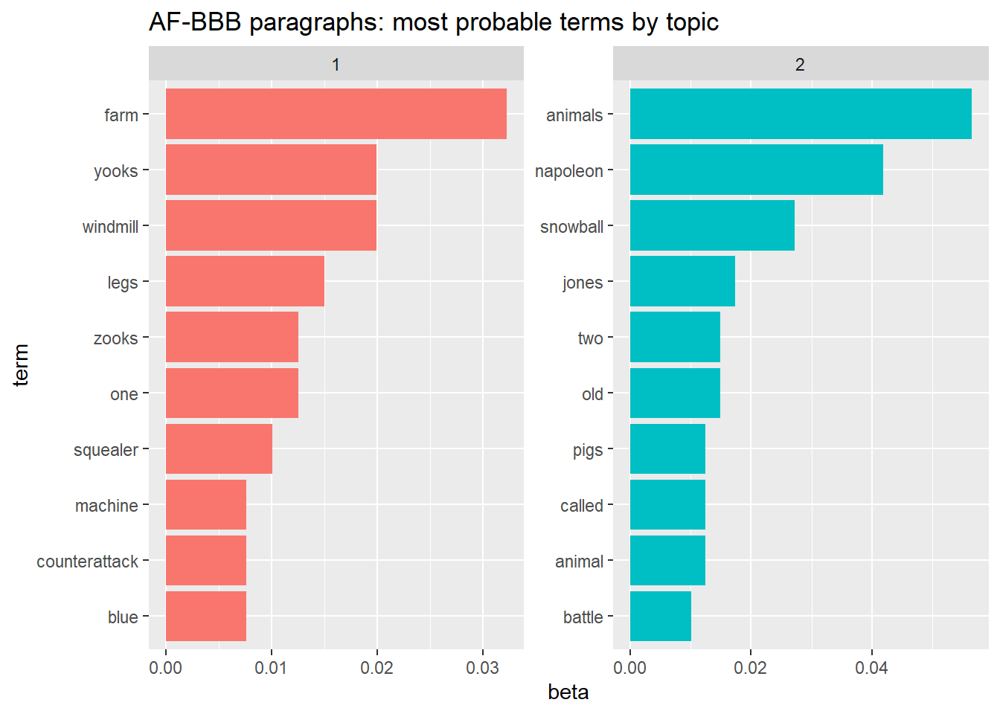
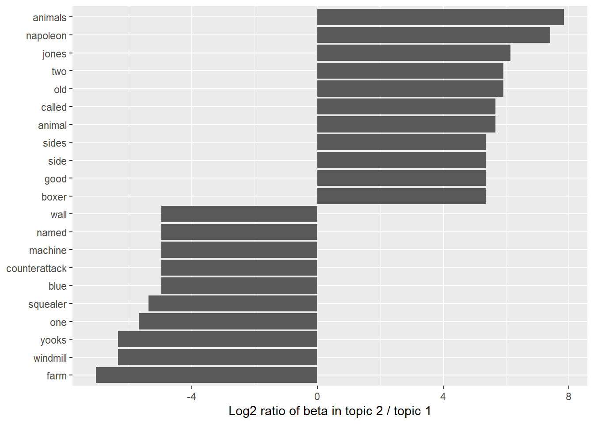

Part 1, Session 2b, of the course presents an overview of text analysis based on Silge and Robinson (2017). The authors describe topic models, and in particular the method of Latent Dirichlet Allocation (LDA). Several course participants requested a more detailed description. This note is a response to that request.
A topic model treats documents as mixtures of topics, where a topic is a probability distribution over the elements of a vocabulary. According to the model, each document is generated in the following steps:
Generate a document-specific probability distribution over a fixed set of topics; and then
For each word-position in that document:
Select a topic at random; and
Generate a vocabulary term from the selected topic.
Standard statistical techniques can be used to invert this process, inferring the set of topics that were responsible for generating a collection of documents.
10.1.3 LDA Method
Latent Dirichlet Allocation (LDA) was proposed by (BNJ2003LDA?) as a method of topic modeling. Silge and Robinson (2017) use the R function topicmodels::LDA() with default parameter setting method = VEM, which denotes the Variational Expectation Maximization (EM) algorithm. In this note we use an alternative implementation of LDA described below.
10.2 Book Review Example
As an experiment we construct a small set of documents from two distinct sources. We then run the documents through the LDA algorithm (without identifying the source of each document) specifying that \(K = 2\) topics are to be constructed to see whether and how well the constructed topics match the original sources.
10.2.1 Data
“Animal Farm” by George Orwell was published in 19452, and nearly forty years later (1984) “The Butter Battle Book” by Dr. Seuss was published3. The books are quite different of course, but they both allude to the Soviet Union in its earlier and later years, respectively.
As a toy example of a corpus of documents, we have extracted Wikipedia’s description of the plots of the two books, counting each paragraph as a separate document.
Here are the successive paragraphs (stripped of punctuation and stop-words) summarizing the two books.
# A tibble: 9 × 3
src pdx para
<chr> <int> <chr>
1 AF 1 animal populace poorly run manor farm near willingdon eng…
2 AF 2 napoleon enacts changes political structure farm replacin…
3 AF 3 mr frederick neighbouring farmer attacks farm using blast…
4 AF 4 years pass windmill rebuilt another windmill constructed …
5 AF 5 napoleon holds dinner party pigs newly allied human farme…
6 BBB 1 yooks zooks live opposite sides long curving wall yooks w…
7 BBB 2 race begins zook patrolman named vanitch slingshots yook …
8 BBB 3 yooks create gun called kickapoo kid loaded powerful pooa…
9 BBB 4 resolution reached books end generals sides wall poised d…
From these paragraphs (each treated as a document) we create the following DocumentTermMatrix object, which is a list that includes:
a sparse matrix giving the document-index, the term-index, and the frequency (number of occurrences) of the indexed term; and
We now employ function topicmodels::LDA()4 to perform latent Dirichlet allocation. The function determines the probable topic of each word within each document by one of two methods: (1) “VEM” (Variational Expectation Maximization); or else (2) “Gibbs” (Gibbs Sampling). The function output, depending on the choice of method, is a list conforming to the format of either LDA_VEM or else LDA_Gibbs.
Here we choose the Gibbs Sampling method because it requires less memory. The DocumentTermMatrix (DTM) representing the corpus of documents (paragraphs) is the primary input to topicmodels::LDA(). (Note that the DTM does not identify the source of each document.) We specify that LDA() should construct \(K = 2\) topics from this input corpus.
Show the code
# Latent Dirichlet Allocation via Gibbs Samplingextract_from_list <-FALSEif (extract_from_list && topicmodels_loaded) { af_bbb_gs <- af_bbb_dtm_lst |> topicmodels::LDA(# number of topicsk =2, method ="Gibbs", # set seed to ensure results can be reproducedcontrol =list(seed =1234) )## # extract tibbles from LDA() output## af_bbb_gs_tbl_lst <- af_bbb_gs |>list_lda_tbls()# z: topic assignment of successive words across corpus af_bbb_gs_z <- af_bbb_gs_tbl_lst$ z_tbl# conc: initial Dirichlet concentration parameters af_bbb_gs_conc <- af_bbb_gs_tbl_lst$ conc_tbl# terms: unique words across the corpus af_bbb_gs_terms <- af_bbb_gs_tbl_lst$ terms_tbl# beta: topic-specific ln(probability) across unique terms af_bbb_gs_beta <- af_bbb_gs_tbl_lst$ beta_wide# beta_terms: append terms, then pivot longer af_bbb_gs_beta_terms <- af_bbb_gs_tbl_lst$ beta_terms# gamma: prob(topic | doc), a D-by-K matrix af_bbb_gs_gamma <- af_bbb_gs_tbl_lst$ gamma_tbl# dw_assign: topic assignment per (doc, term) af_bbb_gs_dw_assign <- af_bbb_gs_tbl_lst$ dw_assign_tbl## # save output components as TSV files: only as needed## save_file <-FALSEif (save_file) {# z: topic assignment of successive words across corpus af_bbb_gs_z |> readr::write_tsv(here::here("data", "retain", "af_bbb_gs_z.txt" ))# conc: initial Dirichlet concentration parameters af_bbb_gs_conc |> readr::write_tsv(here::here("data", "retain", "af_bbb_gs_conc.txt" ))# terms: unique words across the corpus af_bbb_gs_terms |> readr::write_tsv(here::here("data", "retain", "af_bbb_gs_terms.txt" ))# beta: topic-specific ln(probability) across unique terms af_bbb_gs_beta |> readr::write_tsv(here::here("data", "retain", "af_bbb_gs_beta.txt" ))# beta_terms: append terms, then pivot longer af_bbb_gs_beta_terms |> readr::write_tsv(here::here("data", "retain", "af_bbb_gs_beta_terms.txt" ))# gamma: prob(topic | doc), a D-by-K matrix af_bbb_gs_gamma |> readr::write_tsv(here::here("data", "retain", "af_bbb_gs_gamma.txt" ))# dw_assign: topic assignment per (doc, term) af_bbb_gs_dw_assign |> readr::write_tsv(here::here("data", "retain", "af_bbb_gs_dw_assign.txt" )) }} else {# read previously saved LDA-Gibbs components# z: topic assignment of successive words across corpus af_bbb_gs_z <- readr::read_tsv(here::here("data", "retain", "af_bbb_gs_z.txt" ))# conc: initial Dirichlet concentration parameters af_bbb_gs_conc <- readr::read_tsv(here::here("data", "retain", "af_bbb_gs_conc.txt" ))# terms: unique words across the corpus af_bbb_gs_terms <- readr::read_tsv(here::here("data", "retain", "af_bbb_gs_terms.txt" ))# beta: topic-specific ln(probability) across unique terms af_bbb_gs_beta <- readr::read_tsv(here::here("data", "retain", "af_bbb_gs_beta.txt" ))# beta_terms: append terms, then pivot longer af_bbb_gs_beta_terms <- readr::read_tsv(here::here("data", "retain", "af_bbb_gs_beta_terms.txt" ))# gamma: prob(topic | doc), a D-by-K matrix af_bbb_gs_gamma <- readr::read_tsv(here::here("data", "retain", "af_bbb_gs_gamma.txt" ))# dw_assign: topic assignment per (doc, term) af_bbb_gs_dw_assign <- readr::read_tsv(here::here("data", "retain", "af_bbb_gs_dw_assign.txt" ))}
From the LDA_Gibbs output we extract the following “beta” matrix consisting of two fitted probability vectors: the respective probability distributions of topic 1 and 2 across the unique terms of the corpus.
Show the code
# af_bbb_topics: beta matrix in long format with column "term"# Note: tidytext::tidy(<LDA_Gibbs>) generates error # when <LDA_Gibbs> is large and memory is constrained.# In the meantime, patch as followsextract_from_list <-FALSEif (extract_from_list) {# beta: K (topics) by N (terms) of log-probabilities beta_mat <- af_bbb_gs@betacolnames(beta_mat) <- af_bbb_gs@termsrownames(beta_mat) <-paste0("topic_", 1:2) beta_tbl <- beta_mat |> tibble::as_tibble(rownames ="topic") |> dplyr::mutate(topic =1:2) beta_long <- beta_tbl |> tidyr::pivot_longer(cols =- topic, names_to ="term", values_to ="ln_prob" ) |> dplyr::arrange(term)# af_bbb_topics: N by K tibble of probabilities af_bbb_topics <- beta_long |> dplyr::mutate(beta =exp(ln_prob) ) |> dplyr::select(- ln_prob)# save af_bbb_topics as TSV file only as needed save_file <-FALSEif (save_file) { af_bbb_topics |> readr::write_tsv(here::here("data", "retain", "af_bbb_topics.txt" )) }} else {# read in previously saved file af_bbb_topics <- readr::read_tsv(here::here("data", "retain", "af_bbb_topics.txt" ))}# af_bbb_topics |> object.size(): 49 KB# 48992 bytesaf_bbb_topics |>print(n =4, digits =2)
Here are the most probable terms for each of the two constructed topics, along with their probabilities (beta), shown as a bar chart.
Show the code
g_af_bbb_top_terms <- af_bbb_top_terms |> dplyr::mutate(term = tidytext::reorder_within(x = term, by = beta, within = topic)) |> ggplot2::ggplot(mapping =aes(x = beta, y = term, fill =factor(topic) )) + ggplot2::geom_col(show.legend =FALSE) + ggplot2::facet_wrap(~as_factor(topic), scales ="free") + tidytext::scale_y_reordered() + ggplot2::labs(title ="AF-BBB paragraphs: most probable terms by topic")g_af_bbb_top_terms

Figure 10.1: AF-BBB paragraphs: most probable terms by topic
Topic 1’s top ten terms include “yooks” and “zooks”, which do not appear in the top ten terms of topic 2. So topic 1 seems to match “The Butter Battle Book”. Similarly, topic 2’s top ten terms include “napoleon”, “snowball”, and “jones”, which match “Animal Farm”. Note however that “farm” appears under topic 1 and “battle” appears under topic 2.
Another way to compare topics 1 and 2 is to examine the terms shared by the two topics and then find the terms having the biggest disparity in (topic, term) probability (beta). Here’s a bar chart showing the more prominent differences, expressed as
restricting the set of terms to those assigned to both topics \((\min(\beta_1, \beta_2) > 0)\) with at least one of them exceeding a probability threshhold, say \((\max(\beta_1, \beta_2) > 0.001)\).
Show the code
g_af_bbb_b_ratio_wide <- af_bbb_b_ratio_wide |> dplyr::group_by(direction = log_ratio >0) |> dplyr::slice_max(abs(log_ratio), n =10) |> dplyr::ungroup() |> dplyr::mutate(term =reorder(term, log_ratio)) |> ggplot2::ggplot(aes(log_ratio, term)) + ggplot2::geom_col() + ggplot2::labs(x ="Log2 ratio of beta in topic 2 / topic 1", y =NULL)g_af_bbb_b_ratio_wide

Figure 10.2: Log2 ratio of beta in topic 2 / topic 1
This figure further supports the earlier conjecture that topic 1 best matches “The Butter Battle Book” and topic 2 best matches “Animal Farm”. But the match is not perfect, since “farm” is a key term distinguishing topic 1 from topic 2.
10.3 Mathematical Framework
10.3.1 Notation
The data set to be analyzed is a corpus (set) \(\mathcal{D}\) of documents. Each document\(d \in \mathcal{D}\) is a vector (sequence) of words, that may include multiple instances of the same term.5
\[
\begin{align}
d &= (w_1, \ldots, w_{|d|})
\end{align}
\qquad(10.2)\]
The vocabulary\(V\) of the corpus is the set of distinct terms that occur in one or more of the documents.
\[
\begin{align}
V &= \cup_{d \in \mathcal{D}} \; \{ v \in d \} \\
&= \left \{ v_\nu \right \}_{\nu = 1}^N
\end{align}
\qquad(10.3)\]
where the elements of \(V\) may be indexed, typically in alphabetical order. These elements \(v_\nu\) are referred to as terms. We will use word to mean an occurrence of a term within the corpus. With this distinction, the total number of words (term occurrences) in the corpus exceeds or equals the number of distinct terms.67
A topic\(\theta\) is a probability distribution over vocabulary \(V\). Since \(V\) consists of a finite number \(N = \left | V \right |\) of distinct terms, \(\theta\) can be represented as probability vector of length \(N\).
The number \(K\) of topics (categories) is prescribed for each analysis. Given \(K\) and \(\mathcal{D}\), LDA produces a topic model defined by a set of constructed topics, \(\{ \theta_1, \ldots, \theta_K \}\). These topic-specific probability vectors are stored in matrix \(\beta\).
\[
\begin{align}
\beta [k, \nu] &= \theta_k[\nu] \\
&= \text{probability assigned by topic } \theta_k \text{ to term } v_\nu \in V
\end{align}
\qquad(10.5)\]
10.3.2 Generative Model
LDA treats each document as a mixture of topics, and each topic as a mixture of terms. This is a bag-of-words model in which each document \(d\) in a corpus of documents \(\mathcal{D}\) is randomly generated as follows.8
Generate \(K\) topics, \(\{ \theta_1, \ldots, \theta_K \}\), from given Dirichlet distribution \(Dir(\delta_\bullet)\), where topic \(\theta_k\) is a probability vector over vocabulary \(V = \{ v_\nu \}_{\nu = 1}^N\).
For each document \(d\) generate probability vector \(\varphi_d\) from given Dirichlet distribution \(Dir(\alpha_\bullet)\), where \(\varphi_d\) is a probability distribution over topics \(\{ \theta_1, \ldots, \theta_K \}\).
For each word-position9\(j\) in document \(d\): use probability vector \(\varphi_d\) to select at random a single topic \(\theta_k\); then use \(\theta_k\) to generate a term \(v_\nu\), where \(z[d, j] = \nu\) denotes the index of the selected term.
These Dirichlet distributions are typically assumed to be symmetric. That is, if we define
then current practice is to set all elements of vectors \(\alpha_\bullet\) and \(\delta_\bullet\) equal to their respective average values.
\[
\begin{align}
\alpha_k &= \bar{\alpha} \quad \text{for } k \in \{1, \ldots, K \} \\
\delta_\nu &= \bar{\delta} \quad \text{for } \nu \in \{1, \ldots, N \}
\end{align}
\qquad(10.7)\]
The values \(\bar{\alpha}\) and \(\bar{\delta}\) are called concentration parameters.
For a symmetric Dirichlet distribution as above, if \(\bar{\alpha} < 1\) then for each document \(d\), \(Dir(\alpha_\bullet)\) tends to generate a sparse probability vector \(\varphi_d\) that gives most of its weight to just a few of the K topics (with the selection of topics varying across documents). On the other hand, if \(\bar{\alpha} > 1\) then \(Dir(\alpha_\bullet)\) tends to generate a more uniform probability vector \(\varphi_d\) spread more evenly across all topics.
As for the distribution of terms within a topic, in most applications the number \(N\) of distinct terms in the corpus \(\mathcal{D}\) may be a few thousand or even a few tens of thousands. Then each topic is a mixture across a distinct subset of a large number of terms, typically with \(\bar{\delta} < 1\).
See Antoniak (2023) for practical suggestions on these and other settings and workflows.
10.3.3 LDA-Gibbs Algorithm
The LDA identification of topics is a particular form of Markov chain Monte Carlo (MCMC) method. The data can be summarized as the set of unique terms across the corpus of documents, along with counts of those unique terms per document. The objective is to determine the topic of each term within each document.
Assignment of topics to terms is intially made at random in a manner similar to the generative model outlined above. We thereby have initial values for:
\[
\begin{align}
n_{d, k} &= \text{number of assignments of topic } k \text{ to document } d \\
n_{\nu, k} &= \text{number of assignments of topic } k \text{ to term } v_\nu \\
n_k &= \text{number of assignments of topic } k \text{ across corpus } \mathcal{D}
\end{align}
\qquad(10.8)\]
The Gibbs sampling procedure treats in turn each word position in the corpus, and estimates the probability of assigning the term in that position to each topic, conditioned on the current topic assignments of all other terms. From this conditional distribution, a topic is generated and stored as the new topic assignment for the given term in the given position.
Through many iterations the counts \(n_{d, k}, n_{\nu, k}, n_k\) are updated, thereby updating the constructed topics \(\{ \theta_k \}\) and document-specific topic distributions \(\{ \varphi_d \}\).
A great computational savings is achieved by the choice of a Dirichlet prior for the probability vectors \(\{ \theta_k \}\) and \(\{ \varphi_d \}\), and thus for the multinomial distributions of the counts \(n_{d, k}, n_{\nu, k}, n_k\). This is because the Dirichlet distribution is conjugate to the multinomial distribution. For further details on this updating algorithm see Steyvers and Griffiths (2007).
10.4 Concluding Remarks
Topic modeling is an active area of research that contributes to the statistical analysis of large document collections. The LDA model of document-generation specifies prior Dirichlet distributions for topics, and for the mixture of topics within each document, respectively. This enables efficient Bayesian analysis of the latent structure of a corpus of documents.
\(| S |\) denotes the number of elements in a finite set \(S\) (or more generally the cardinality of set \(S\)). We extend this notation to a sequence. If \(d = (w_1, \ldots, w_n)\) is a finite sequence of words, we treat \(d\) as a vector of length \(n = |d|\).↩︎
In natural language processing (NLP), text is broken into tokens, a broad term that must be defined for each analysis. In the present context the original text is stripped of punctuation and of commonly occurring words (“stop-words”) so that the remaining words are the tokens analyzed.↩︎
For clarity we use term to mean a distinct element of a vocabulary, and we use word to mean an occurrence of a term in the corpus. There does not seem to be an established jargon for this distinction.↩︎
Other authors use the verb “sample” rather than “generate” to mean random generation from a specified probability distribution.↩︎
We assume that document \(d\) is a sequence of \(n_d = |d|\) words, where \(n_d\) is either a given positive integer, or else is generated independently of other random variables.↩︎